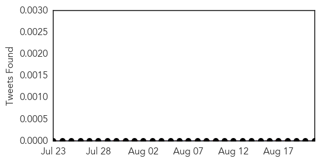
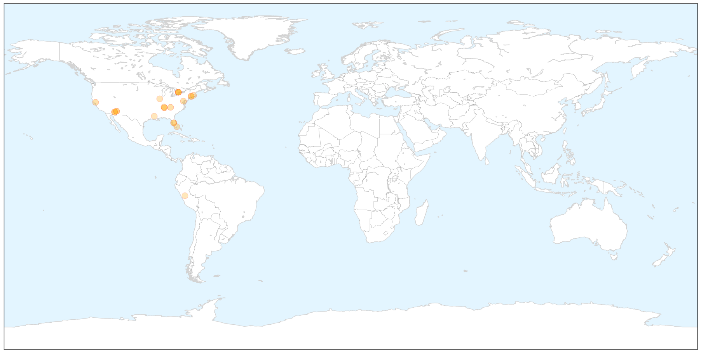
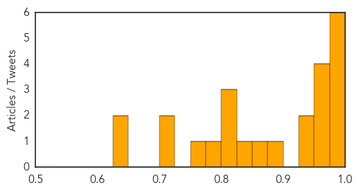
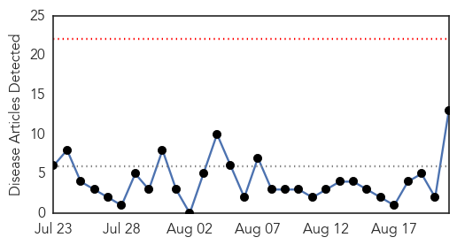
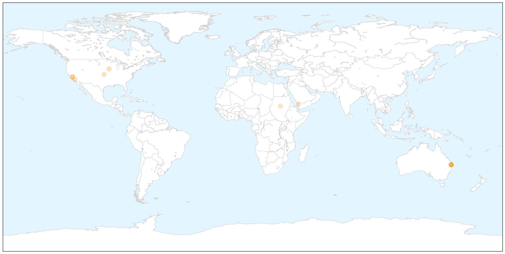
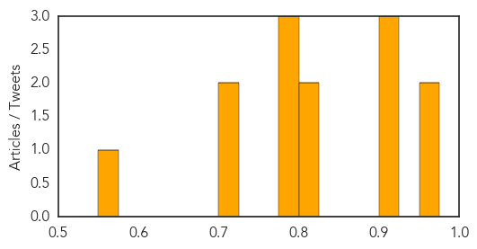

West Nile Virus
30-Day Web Trend
1 alerts, 0 warnings

30-Day Twitter Trend
0 alerts, 0 warnings

Article Locations

X

Article Confidences
Top Articles:
- 0.997
- TPH confirms first case of West Nile virus in Toronto this year
- 0.996
- 4 deaths in Arizona prompt mosquito concerns
- 0.994
- 3 human cases of West Nile virus reported in Tennessee, including one in Blount
- 0.991
- Maricopa County Investigating Mosquito-Borne Outbreaks, West Nile Virus, Encephalitis
- 0.989
- District reports first West Nile virus case this summer
- 0.977
- West Nile Virus case confirmed in Toronto resident
- 0.972
- West Nile Virus Found in 15 Connecticut Communities
- 0.970
- Napa bird found with West Nile Virus
- 0.963
- Toronto confirms first human case of West Nile virus this year
- 0.959
- Pinellas Issues West Nile Virus Advisory
- 0.940
- It’s Mosquito Season; Take Precautions to Stay Safe from Diseases
- 0.939
- Will County reports spike in West Nile mosquitoes
- 0.888
- Human case of West Nile virus found in Madison County
- 0.869
- West Nile virus activity increasing, state warns
- 0.835
- Sizable Increase in West Nile-Positive Mosquitoes
- 0.819
- 3 human cases of West Nile virus reported in Tennessee, including one in Blount. News Source
- 0.804
- 20 West Nile virus infections diagnosed so far this year
- 0.801
- Mosquitos test positive for West Nile in Flanagan; dead bird in Peru
- 0.792
- The Arlington Health Department Informs Residents On Mosquito Bites & Breeding
- 0.757
- Three in TN test positive for West Nile virus, 1 in East TN
- 0.722
- Mosquito-borne illness advisory issued in Pinellas
- 0.708
- Three in TN test positive for West Nile virus
- 0.643
- Health department urges residents to be vigilant against mosquitos
- 0.639
- Maricopa County seeing 2 mosquito-borne outbreaks
Top Tweets:
-
No tweets found for Aug 21, 2015
Measles
30-Day Web Trend
0 alerts, 0 warnings

30-Day Twitter Trend
0 alerts, 0 warnings

Article Locations

X

Article Confidences
Top Articles:
- 0.969
- Five measles cases confirmed at University of Queensland at St Lucia on Brisbane's west side
- 0.958
- Measles fears in Queensland
- 0.906
- Fiorina’s Fuzzy Vaccine Claims
- 0.901
- Huntington Hospital bacterial outbreak infected 3 patients
- 0.901
- Huntington Hospital bacterial outbreak infected 3 patients
- 0.811
- March of Dimes: Back-to-school vaccinations are crucial
- 0.804
- ANA Recommends That All Nurses Should Be Immunized Against Vaccine-Preventable Diseases
- 0.798
- UN health workers vaccinate millions of children against polio and measles in war-ravaged Yemen
- 0.796
- Time to treat violence in our city as a disease
- 0.785
- Sudan Vision Daily
- 0.722
- Brisbane measles: Student visited pubs, clubs
- 0.722
- Brisbane measles: Student visited pubs, clubs
- 0.554
- Five UQ students diagnosed with measles
Top Tweets:
-
No tweets found for Aug 21, 2015